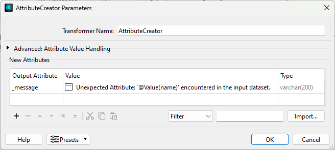
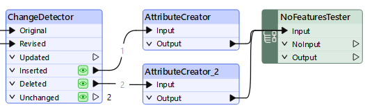
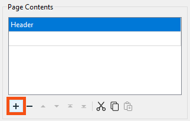
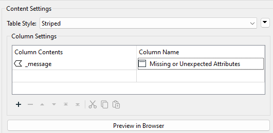
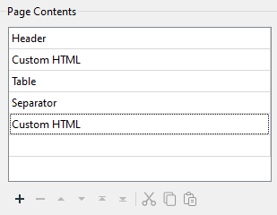

After completing this lesson, you’ll be able to:
So far in our workflow, we’ve exposed our datasets' schemas and compared them against each other to reveal which attributes have changed. In this exercise, we create a report on the changes in the schema. This report could be sent to users as part of an Automation or FME Flow App if the data they submitted caused schema drift, or it could be run on multiple datasets regularly to test for and report on schema drift. The method is flexible and lets you create a system for monitoring for, and even correcting, drift.
We want to create a message for each attribute added to the original schema. Add an AttributeCreator transformer to your workspace and connect it to the ChangeDetector's Inserted port.
Open the AttributeCreator parameters and create a New Attribute called _message. For Attribute Value, enter the following:
Unexpected Attribute: `@Value(name)' encountered in the input dataset.

Press OK to accept the parameters and close the transformer.
We also want to create a message for each attribute deleted from the original schema. To do so, we can add another AttributeCreator and connect it to the ChangeDetector’s Deleted port. Open the AttributeCreator_2 parameters and create a New Attribute called _message. For Attribute Value, enter the following:
Missing Attribute: `@Value(name)' is not in the input dataset.
We need to test whether the ChangeDetector is producing any features. If no features are output from the two AttributeCreators, then the schema is valid, and no error messages were produced.
Add a NoFeaturesTester custom transformer to the workspace.
If you don't already have it installed, FME will prompt you if it's OK to install. Click Install. FME will automatically download the transformer from the FME Hub.
Connect both the AttributeCreators to it.

Now that we’ve bundled our messages into a list that will be presentable in an HTML document, we can create the report.
Add an HTMLReportGenerator to your workspace and connect both the AttributeCreators to it.
Open the HTMLReportGenerator parameters.
Set Page Title to Schema Change Report.
Under Page Contents, change the existing Chart (Bar) page to Header by clicking it and selecting Header.

Click anywhere on the right side of the dialog to confirm the section type change; the parameters on the right side will change to the Header parameters. Set the Header Content Settings as follows:
Your dialog should look like this:

Now that we’ve set up a simple header, we can add our list of messages.
Add another section to the page by clicking on the small plus (+) symbol at the bottom left

Set it to Custom HTML. Under Content Settings, set the Custom HTML as follows:
The upload was halted because the source schema has been changed! Please check the daily input and log for more details. <br> Below are the details on missing or unexpected attributes.<br> <br>
Next, add another section. Set it as a Table and change the Table Style to Striped. Under Column Settings, set Column Contents to the _message attribute, and set the Column Name to:
Missing or Unexpected Attributes

Below this, add another section and set it to a Separator. Set the thickness to 2.
Add one last section and set it to Custom HTML. Set the Custom HTML as follows:
<br>Thanks for your cooperation.
Your final Page Contents should have these elements:

Press OK to accept the parameters and close the transformer.
Before sending the HTML to the HTML writer, we want to clean up and organize the layout.
Add an HTMLLayouter to the canvas and connect it to the HTMLReportGenerator.

We can use the default parameters. The HTMLLayouter is commonly paired with the HTMLReportGenerator to create a bootstrap grid or vertical layouts. In this case, the default parameters will provide a vertical layout.
We also want our users to be notified if their schema is valid, not just if their schema has failed. The message must go both ways to make the user understand what actions to take next. Add another HTMLReportGenerator to the canvas and connect it to the NoFeaturesTester's NOINPUT port.
Open up the HTMLReportGenerator_2 parameters.
Set Page Title to Schema Change Report.
Under Page Contents, change the existing Chart(Bar) page to Header by clicking it and selecting Header. Click anywhere on the right side of the dialog to confirm the change; the parameters on the right side will change to the Header parameters. Set the Header Content Settings as follows:
Add another section by clicking on the small plus (+) symbol at the bottom left and setting it to Custom HTML. Under Content Settings, set the Custom HTML as follows:
Hello, <br> Your data has passed the schema validation test and is ready to be uploaded. <br> Thanks for your cooperation.

Press OK to close the HTMLReportGenerator_2 and accept the new parameters. Add another HTMLLayouter to the canvas and connect the HTMLReportGenerator_2 to it. Again, we can use the default parameters to create a vertical bootstrap layout.

Whether you plan to use this workspace in a workspace app or create a simple HTML document, we need to add a writer to output our final schema report!
Add a writer to your workspace and set the Format to HTML. Set the Dataset parameter to C:\FMEData\Output\Training\schema_failed.html.

Press OK to add the writer to your workspace.
Now, let's connect the HTMLLayouter to the HTML writer feature type.
We can repeat the process above to create an HTML writer for the valid schema report. Add another HTML writer to your workspace. Set the Dataset parameter location to the same output location as above, then name the file schema_passed.html.
Everything in our workspace is complete, and we can output our data to produce the report. Connect the schema_passed writer feature type to the HTMLLayouter_2.
Now that we’ve set up our workspace to detect changes in the schema and produce a report on its condition, we can try running it to see our results! To do so, run the workspace and click Open Containing Folder on the HTML Writer that receives features from its HTMLLayouter.

Click the writer feature type for schema_failed.html, then click Open Containing Folder.
Open the resulting HTML file in your web browser by double-clicking it. You should see a Schema Check Failed report.

This exercise taught you how to utilize the SchemaScanner alongside the ChangeDetector to perform a change detection process on two dataset schemas. The result? You can now create a report on whether or not the schemas match. With this new information, users will feel more confident updating datasets and inserting new records. This also saves time by not fixing datasets after users upload features with mismatched schemas!
How else can we use this workspace? Instead of writing out our data to an HTML file, we could email a user the results of the Schema Change Report in the form of the HTML content produced through the HTMLReportGenerator and the HTMLLayouter. Alternatively, if you’re familiar with FME Flow Apps, you could create an app that allows the user to upload a file to the server app themselves and instantly receive a copy of the Schema Change Report in their browser upon submission of the file. You could include this technique in other workspaces to verify schema matches before integrating data or create a schema verification workspace that must successfully run before integrating into the start of your FME Flow Automations.
Want to learn more? Check out these dynamic workflow and schema drift resources: